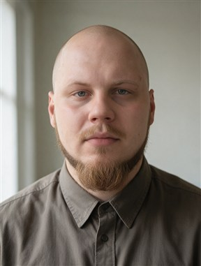
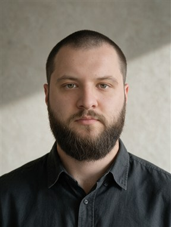

Состав и цена
известны до старта.
Фиксируем страницы, функции и стоимость. Домен, хостинг и платные сервисы указываем отдельно.
Что входит в сайтРЕКЛАМНОЕ АГЕНТСТВО ДЛЯ БИЗНЕСА · МИНСК
Полностью под ключ с фиксированной ценой и сроками.
Расскажите нам о вашем бизнесе, а структуру, дизайн и разработку мы берём на себя.
72 часа — от согласования ТЗ и получения материалов до первого показа рабочей версии.
Правки после показа и финальная публикация в этот срок не входят. Как считаем срок
ЧТО ВЫ ПОЛУЧАЕТЕ
Фиксируем страницы, функции и стоимость. Домен, хостинг и платные сервисы указываем отдельно.
Что входит в сайтВы знаете свой бизнес — мы помогаем о нём рассказать. Готовим структуру и тексты, собираем страницы, проверяем мобильную версию и формы.
Как устроен запускПередаём файлы сайта и доступы к его управлению. Домен и хостинг оформляем на вас, либо загружаем на уже существующую инфраструктуру. Рекламу и SMM можно подключить отдельно, когда они понадобятся.
Посмотреть работыЧТО МЫ ДЕЛАЕМ
Сайты, реклама, SMM, SEO-аудит и внедрение ИИ — самостоятельные услуги. Выбирайте то, что нужно сейчас.
От вашей задачи
до узнаваемости в интернете.
Лендинг или сайт компании: расскажем об услугах, покажем работы и поможем посетителю обратиться. Число страниц и функции согласуем под вашу задачу.
За 72 часа подготовим первую рабочую версию по согласованному ТЗ. Правки после её показа и финальная публикация занимают дополнительное время; их порядок и сроки согласуем до старта. Для магазина, большого каталога или сложных интеграций рассчитаем отдельный срок. Домен, хостинг и платные сервисы не входят в стоимость разработки.
Проверяем спрос.
Считаем обращения.
Яндекс Директ, Instagram / Meta Ads и ВКонтакте. Выбираем канал под ваш продукт, географию и бюджет. Можно прийти с готовым сайтом.
Подробнее о рекламеОплата площадок и наше ведение — отдельные суммы. Согласуем бюджет и показатели оценки до запуска. Доступ к рекламным кабинетам и статистике остаётся у вас.
Показываем продукт.
Выстраиваем доверие.
Соцсети, в которых понятно, что вы предлагаете и почему к вам стоит обратиться. Показываем услуги, команду, процесс и работы вашего бизнеса.
Подробнее о SMMПлощадки, число публикаций, подготовку фото и видео согласуем заранее. Съёмки и платное продвижение рассчитываем отдельно.
Находим проблемы.
Внедряем правки.
Проверяем структуру страниц, доступные данные об индексации, заголовки, ссылки и технические ограничения. Составляем план и внедряем согласованные изменения.
Подробнее о SEO-аудитеОбъём и стоимость уточним после знакомства с сайтом. Конкретные позиции в поиске не обещаем; ежемесячное SEO-ведение в эту услугу не входит.
Меньше рутины.
Больше времени на работу.
Поможем автоматизировать конкретный процесс: ответы на типовые вопросы, обработку заявок, поиск по документам или подготовку отчётов. Подберём решение под ваши данные и рабочие инструменты.
Состав работ, стоимость, сроки и расходы на сторонние сервисы согласуем после разбора задачи. Срок 72 часа относится только к первой рабочей версии сайта.
Нужен только сайт? Его можно заказать без рекламы и ежемесячного ведения.
Расскажите о задачеИЗБРАННЫЕ РАБОТЫ
Показываем его в структуре, дизайне и деталях сайта.
МЕБЕЛЬ И ИНТЕРЬЕР · МИНСК
Сайт студии кухонь: проекты, этапы работы
и обращение за консультацией.
БРЕНД ОДЕЖДЫ · МОСКВА
Сайт бренда мужской одежды: коллекции, каталог моделей и гид по выбору.
КЛИНИКА · МОСКВА
Сайт клиники: направления, специалисты и маршруты для пациентов.
УСЛУГИ · МИНСК
Услуги клининга, примеры уборок
и быстрый заказ.
ГОСТЕПРИИМСТВО · МИНСК
Атмосфера ночного клуба,
афиша и бронирование столов.
Обсуждаете задачу напрямую с людьми, которые ведут проект.
Работаем с бизнесом в Минске и по всей Беларуси.

Помогает сформулировать задачу бизнеса
и договориться о понятном результате работы.

Управляет командой разработчиков.
Связывает рекламные кампании, сайт
и аналитику в один рабочий процесс.
КАК ГОТОВИМ ПЕРВУЮ ВЕРСИЮ ЗА 72 ЧАСА
До старта согласуем ТЗ, состав первой рабочей версии, цену и дату показа. Порядок и сроки правок определим отдельно.
Уточняем услуги и аудиторию. Получаем сведения о бизнесе, фото и доступы. Согласуем ТЗ и состав первой рабочей версии.
Готовим структуру, тексты и визуальное решение по согласованному ТЗ.
Собираем страницы, адаптируем под телефон. Подключаем контакты, форму заявки и согласованные цели аналитики.
Проверяем мобильную версию, ссылки и формы. Показываем первую рабочую версию сайта и собираем ваши замечания.
Как считаем время. 72 календарных часа начинаются после согласования ТЗ и получения материалов и доступов. К концу срока показываем первую рабочую версию по ТЗ. Правки после первого показа, их проверка и финальная публикация в эти 72 часа не входят; их сроки согласуем отдельно. Новые страницы и функции оцениваем отдельно.
Рекламу, SMM и SEO-аудит можно заказать отдельно — по мере необходимости.
Да. Сайт — самостоятельный продукт, без обязательного ежемесячного ведения. Рекламу, SMM и SEO-аудит можно заказать отдельно, в том числе для уже работающего сайта.
Стоимость зависит от объёма страниц и функций. После обсуждения вы получите состав работ и фиксированную цену в BYN: тексты, дизайн, мобильную версию, формы, базовую аналитику и запуск. Домен, хостинг и платные сервисы показываем отдельными расходами. Дополнительные работы оцениваем и согласуем до их выполнения.
Первая рабочая версия лендинга или сайта компании по согласованному ТЗ: её можно посмотреть и проверить. Затем вы даёте замечания, мы вносим согласованные правки и готовим сайт к финальной публикации. Время на эти этапы не входит в 72 часа; сроки согласуем отдельно. Магазины, большие каталоги и сложные интеграции оцениваем индивидуально.
Передаём вам файлы сайта и доступы. Домен и хостинг оформляем на вас, либо загружаем на уже существующую инфраструктуру. Перечень передаваемых материалов и условия использования сторонних сервисов фиксируем до начала работ.
Единой суммы для всех бизнесов нет. Она зависит от ниши, географии, спроса и целей. После обсуждения предложим тестовый бюджет и объясним, какие данные он позволит получить. Оплата рекламных площадок и наших услуг — отдельные расходы.
Количество продаж зависит не только от рекламы: важны предложение, цена, спрос и работа с обращениями. Мы согласуем объём работ и показатели для оценки, проверяем гипотезы и объясняем результаты. Фиксированное число продаж заранее не обещаем.
Чтобы начать разговор, достаточно описать бизнес и задачу. Поможем со структурой и текстами. С вашей стороны понадобятся достоверные сведения об услугах, ценах, условиях и материалы, которые можно использовать.
НАЧНЁМ С ВАШЕЙ ЗАДАЧИ
Расскажите о бизнесе и задаче. Предложим состав работ,
рассчитаем цену и подтвердим срок.
Напишите нам о бизнесе и задаче — предложим состав работ, стоимость и срок.
Написать в Telegram